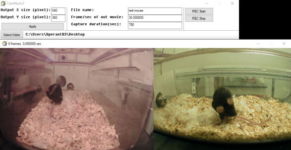

AviRecorder
AviRecorder captures video from USB cameras and saves it as AVI format video. It can capture up to 4 cameras* and concatenate them to make a single video file. User can specify recording frame rate, resolution and duration.

How to use
1. Install Xvid (mp4 encoder) with the installer included in this package or download from the official site (https://www.xvid.com/).
2. Check the resolution of your USB camera
The resolution can be checked by CameraResolutionChecker included in this package as followed,
CameraResolutionChecker.exe --> Choose USB camera --> Click Play button --> The resolution is appeared on the title bar. If you cannot see the resolution, click "Show resolution" button and see the output size.
3. Launch AviRecorder3.25.exe (or latest version)
4. Enter the resolution of the USB camera.
5. Click Next
6. Enter the output video resolution and click the appy button.
7. Enter the file name, frame rate of the output video and recording time. Set the destination of the save folder.
8. Click "REC Start"
*The number of cameras depends on the performance of the PC and the camera resolution (more cameras can be connected when the resolution is small).
*If you want to disable built-in camera of the laptop computer, find the camera in Control Panel -> Device Manager -> Camera and right clilck it and select "Disable Device" (Windows 10).